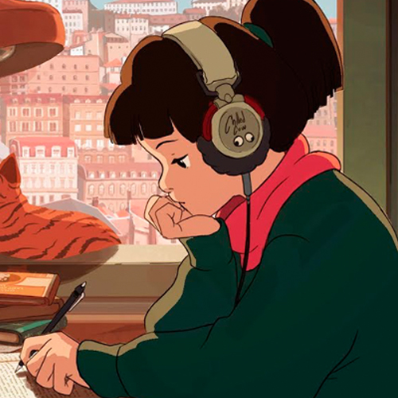
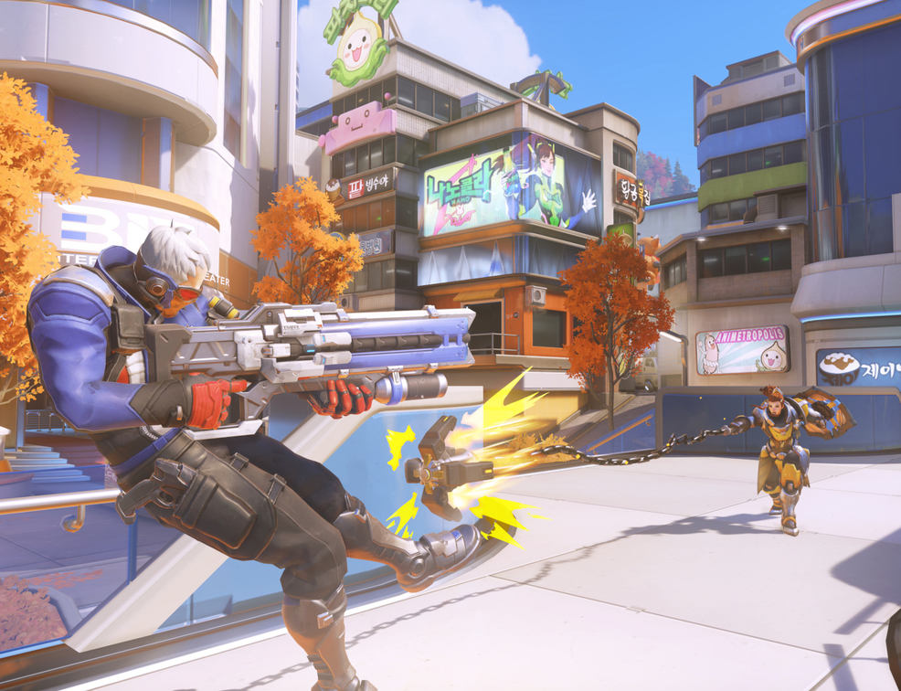

Referências
Nós da Overwatch Store separamos também conteúdo relacionado ao jogo que achamos que você vai gostar. Veja mais abaixo:
Overwatch League
Se você gosta de e-sports, não deixe de assistir à quarta temporada da Overwatch League. Você ainda ganha 5 tokens a cada 1 hora de partidas assistidas! Clique aqui para saber mais.
Tracer - London Calling
Para os amantes do lore de Overwatch, o quadrinho "Tracer - London Calling", escrito por Mariko Tamari, foca na história da personagem Tracer após o fim da organização Overwatch. Clique aqui para ler.
Overwatch Lofi
Quer uma trilha sonora perfeita para jogar Overwatch ou até mesmo para estudar? Desfrute da seleção lofiLo-fi (atualmente conhecido como lo-fi hip hop) é um estilo de produção musical que usa técnicas de gravação de baixa fidelidade (low fidelity) criada pela Overwatch League! Clique aqui para ouvir.
Dicas de Jogabilidade
Se você está aprendendo a jogar ou quer melhorar suas habilidades, esse conteúdo aqui é especial para você! Separamos um dos melhores canais de Overwatch com as melhores dicas para você aperfeiçoar as suas skills e conhecer novos truques e estratégias de cada herói e mapa do jogo. Clique aqui para saber mais.